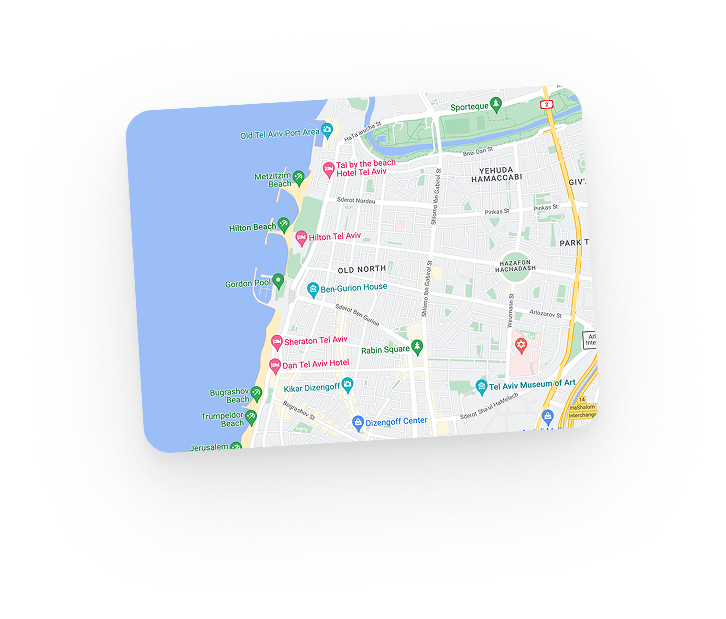
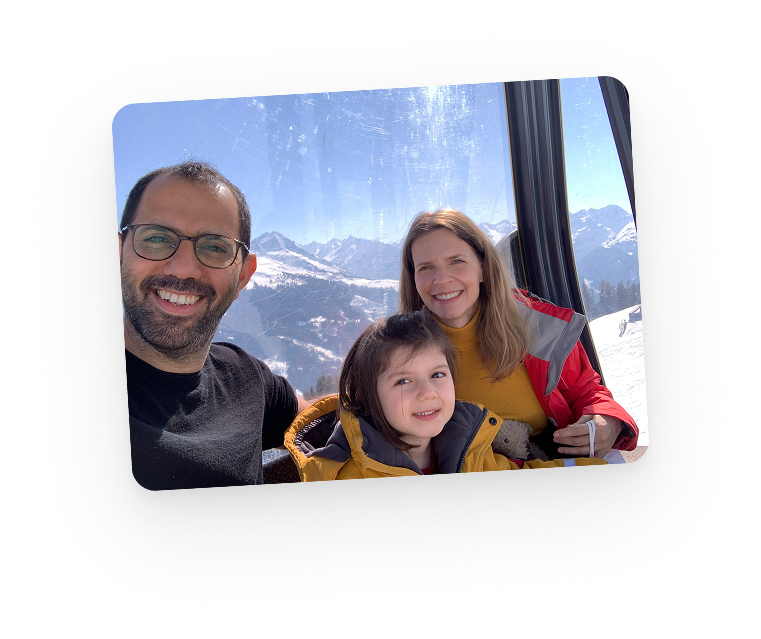
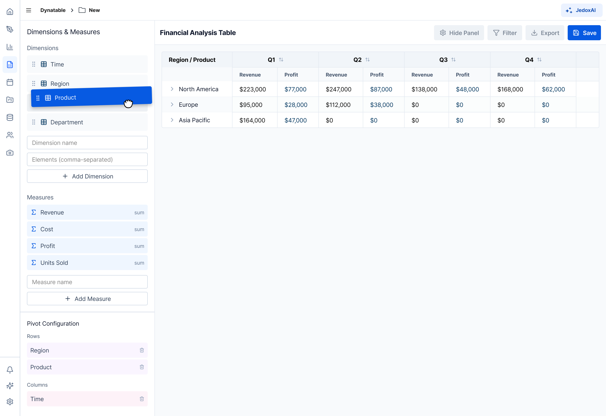
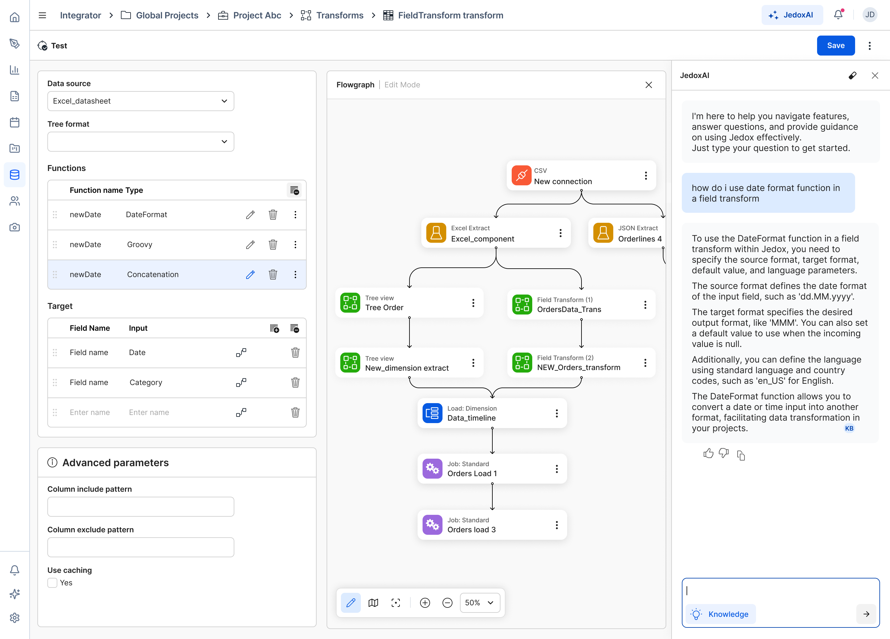
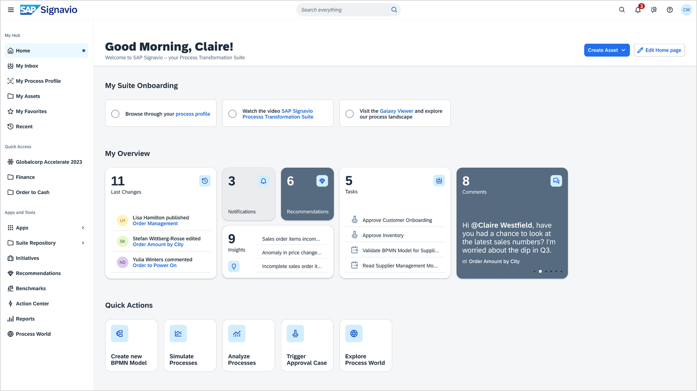
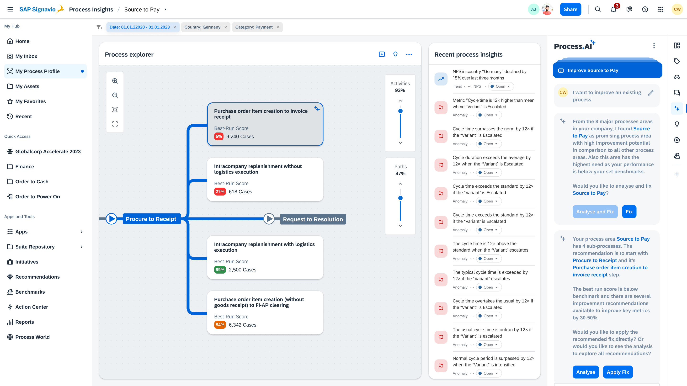

Hi! I'm Ori Cohen.
Leading design at Jedox.
I'm a design leader with nearly 15 years of experience shaping UX/UI across startups, scale-ups, and global enterprises. Currently, I lead design at Jedox.com. Previously, I designed and led teams at Volkswagen, SAP, and other key players in the Tel Aviv and Berlin tech ecosystems. Also a ☕ bitter coffee lover and an ⛰️ average indoor climber.


I see design leadership as the practice of building systems — teams, processes and culture — that allow great products to scale. For me, design is not just about interfaces or aesthetics, but about creating clarity, alignment and long-term impact across organizations.
Over the past nearly 15 years I've shaped UX/UI across startups, scale-ups and global enterprises, working between Tel Aviv and Berlin. My path took me from hands-on design roles to leading and scaling design teams, and to working closely with product, engineering and executive leadership in complex, evolving environments.
Today I lead design at Jedox, where I helped build and grow the design organization from the ground up. My focus has been on establishing and scaling core capabilities — research, design systems and cross-functional collaboration — and embedding UX-driven, agile processes across multiple product teams. This work has supported large-scale platform initiatives, AI-driven product development, and the rollout of new strategic features such as dashboards and enterprise tools.
A central part of my role is people leadership. I invest heavily in growing autonomy and ownership within teams, mentoring designers into strong domain leads who can independently drive research, define user flows, and partner with product and engineering. I believe that sustainable scale comes from developing leaders, not from centralizing control.
My leadership style is hands-on, direct and grounded. I aim to be clear about direction and expectations, while staying close enough to the work to support quality and decision-making. Colleagues and team members often describe me as determined, supportive, and someone who knows where we are heading while creating space for others to excel.
Before Jedox I designed and led teams at companies such as Volkswagen and SAP, gaining experience in highly structured enterprise environments as well as in fast-moving product organizations. Working across different cultures and company stages shaped how I think about scale, collaboration and long-term product strategy.
At this stage I'm most interested in leadership roles where design operates as a strategic partner — shaping product direction, scaling teams and organizations, and working closely with senior leadership to drive meaningful business and user impact.
Outside of work I enjoy bitter coffee, indoor climbing (with varying success), and spending time with my family.
-
I lead the UX/UI team at Jedox, a planning and analytics platform. I'm responsible for user experience research and for the design system, and for growing and scaling the team itself.
The work runs across the organization: I partner directly with executive leadership and with engineering, in a setup built around close collaboration rather than handover.
- Led the research, redesign and release of a modernised, multi-persona analytical FP&A platform — dashboards, modelling, integrations and end-to-end agentic AI capabilities.
- Established and scaled an internal design system for consistent, accessible UI across products, improving accessibility of cross-platform components by 40%.
- Built a user research framework, qualitative and quantitative, that lifted usability benchmarks 15% year over year.

The workspace home — quick starts, recent models and shared work. 
Dynatable — dimensions, measures and pivot configuration. 
Integrator — a transform flowgraph, with JedoxAI alongside it. -
I led design discovery and delivery across the process transformation suite, and the collaboration that had to hold it together across a large organization.
- Supported the release of three new suite products — dashboards, metrics libraries and AI insights — through to general availability.
- Facilitated collaboration across eight teams, keeping design scalable and consistent across product lines, and improving the processes behind it.
- Ran cross-domain UX workshops, design-thinking activities and design sprints for product discovery.

The hub — onboarding, recent changes, tasks and comments in one place. 
Process explorer — sub-processes scored against best run, insights beside them. 
Galaxy Viewer — the process landscape, with a model previewed in place. 
My Inbox — tasks, assignees and steps. -
A drawer rather than a case study. Interaction and motion studies, interface fragments I keep coming back to, and product work from further back that never got written up.
Nothing to show here yet — it is being filled.